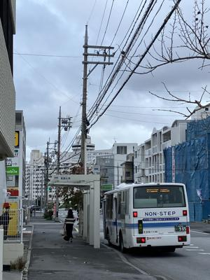
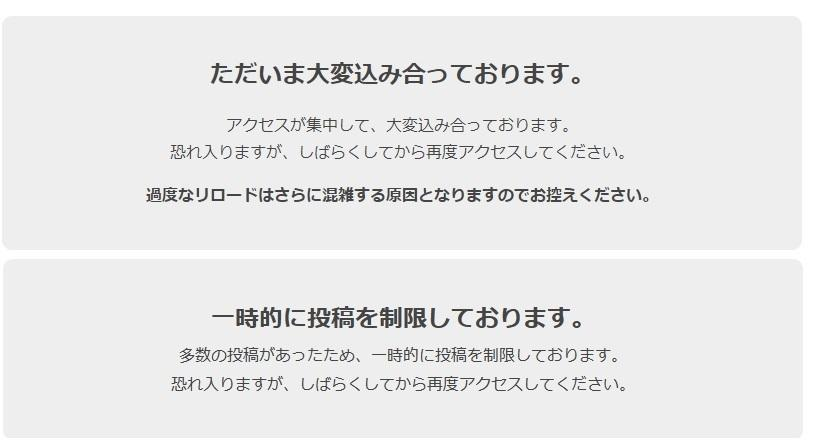

うるがいの話 ある日
最新: 春分の日【うるがいの話 ある日】とは 一日だけのプログです
『うるがいの話』の最新一日だけのプログで、通信料が少なく経済的だ。カニの画像をクリックすると全ての日付が載る『うるがいの話』サイトを表示します
|
|
【うるがいの話】 うるがい(ｳﾙｶﾞｲ urugai)とは、『もずくがに』の名前でとても大きくなります。 |
|---|---|
|
|
【カミマヤーの話】 猫のことを方言でマヤーといいます。カミマヤー（kamimayaa）とは、神の猫のことです。 |
|
【たながぁの音楽】 たながぁ（ﾀﾅｶﾞｰ tanagaa）とは手長えびのことで、何種類かあり大きいのは車 エビぐらいになります。 |

|
【ぶながぁの話】 ぶながぁ(ﾌﾞﾅｶﾞｰ bunagaa)とは、赤い髪の毛、赤い身体、そして身長は１ｍ２０ｃｍ ぐらい、川の蟹を食べているの目撃された。場所は沖縄県国頭郡大宜味村のと ある村僕の隣近所に住んでいる爺さんから、聞いた話です。 |
|
|
【ギーマの話】 ギーマ(giima)とは、山原の里山に咲くスズランに似た、 花を付けます。実は食べられます、 気が付くと口の周りが紫になっています。 |
2024年03月20日 (水）春分の日
18:06

マンションへ行き、仏壇にうさぎものをして家に戻ると１１時半になってい
た。とある会議で、テーマになった１２時６分に皆でというので教えてもら
った１２時ユーチューブ動画のサイトに入る。そして、参加の申し込みを登
録し届いたリンクを開く。オェー、混んでいる。

しばらく、ねばったが諦めて昼ねをする。２時半にリンクを開くと、視聴出
来た。旬の１２時６分ははるかかなたに行ってしまったが、ま、いいか見て
みるかと見ていると、視聴数が数千単位にアップする。オー！、旬の時間帯
で目標の１４万４千人を達したと動画の中で言う。３時間前にライブ配信、
２６３，５２５回視聴回数があれよあれよと、２７７，６６０になった。私
と同じく旬を逃した人達が沢山いる、うふふふ。ヨメとウォーキングした後
１７：３９で３１３，９１２回だった。動画は一時間以上あったので、全部
は見ませんでした、のでなんだったかよくわかりませんでした。
因みに１１カ月前にアップした『箏さくらさくら』の視聴回数を確認すると
５，２４６回数だった。
１７時５８分 ビットコインの総資産 ￥２７、４０４（↑１５１）